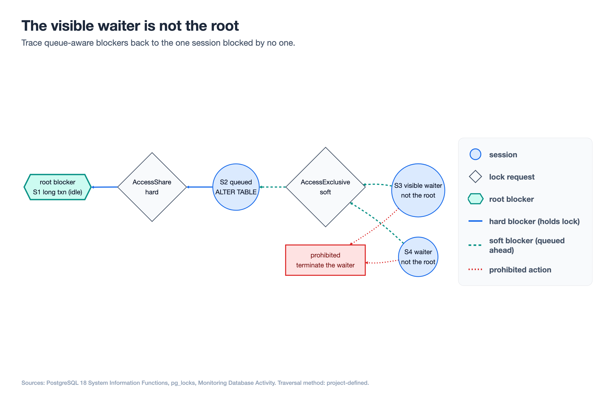
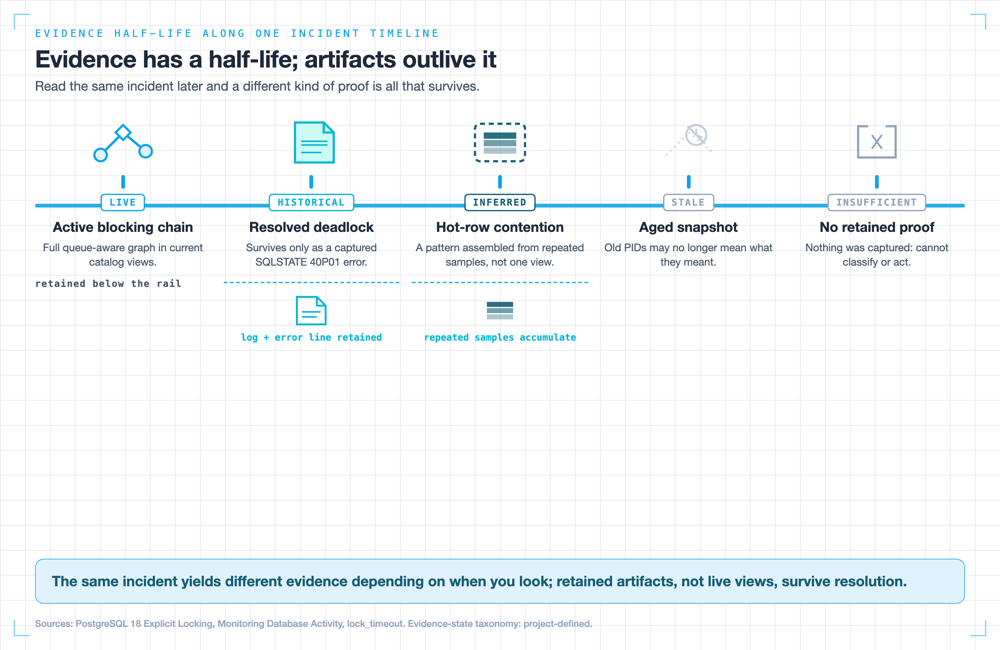
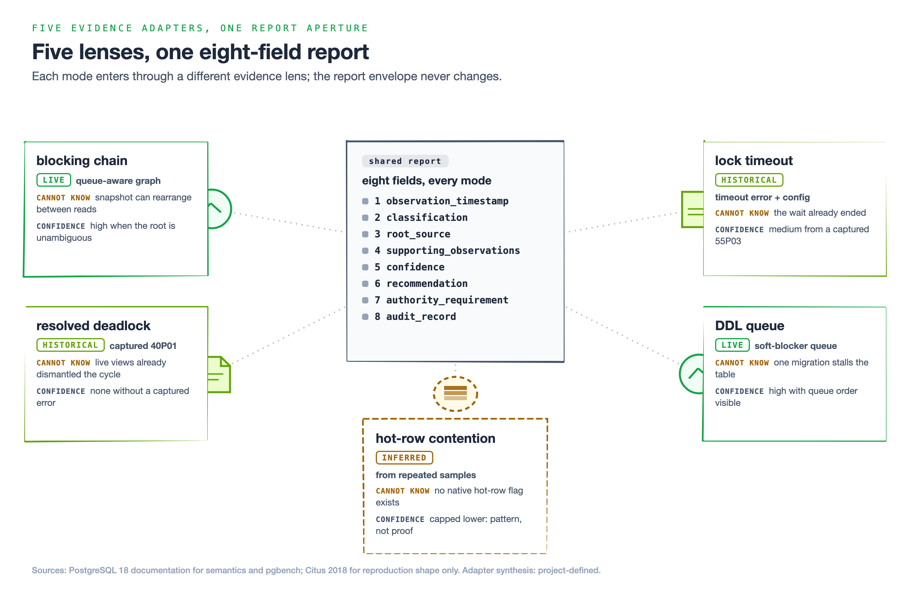

A PostgreSQL query has been stuck for four minutes. Your dashboard highlights the session that is waiting, its runtime climbing in red. The tempting move is obvious: copy the PID, call pg_terminate_backend, and move on. I have watched skilled engineers do exactly this under pressure — and kill the wrong session, because the query the dashboard shows you waiting is almost never the transaction actually holding the lock. That gap is the whole problem in PostgreSQL lock diagnosis: the loudest session is the wrong one to touch.
This is the first of a two-part series on building a guarded PostgreSQL lock diagnosis agent. Part 1 is about evidence: how to find the real root blocker, how to package every incident into one machine-checkable report, and how to keep the whole thing read-only so it physically cannot amplify an outage. Part 2 adds the authority ladder — when a system may cancel or terminate, and whether orchestrating this with an agent measurably beats a plain script. Everything here is backed by a public, runnable lab you can clone: postgres-lock-agent-lab.
One boundary holds from the first line to the last: diagnosis never grants the authority to act. A perfect report is still just a report.
1. Find the root blocker, not the waiting query
Picture three sessions. Session A opened a transaction and updated row 1 but never committed. Session B updated row 2, then tried to update row 1 and is now waiting behind A. Session C tried to update row 2 and is waiting behind B. Your dashboard, sorted by wait time, screams about C. C is the visible waiter. It is the most downstream, most innocent participant in the chain.
The naive fix — target the oldest or longest-waiting query — is wrong for a structural reason. Blocking in PostgreSQL is a graph, not a list, and the node you can see is a leaf. To find the root you have to traverse the edges.

The visible waiter is a leaf. Trace the queue-aware edges back to the one session no edge leaves: the root blocker.
Hard blockers, soft blockers, and the wait queue
PostgreSQL exposes the right traversal function directly. Per the System Information Functions documentation, pg_blocking_pids(pid) returns the process IDs blocking a target process from acquiring a lock. Crucially, it returns two kinds of blocker:
- Hard blockers already hold a conflicting lock on the object the target wants.
- Soft blockers do not hold a conflicting lock yet, but their conflicting request sits ahead of the target in the wait queue.
That second category is why you cannot reconstruct the truth from granted locks alone. The pg_locks view tempts you to build this yourself with a self-join, but blocker identity depends on both held locks and wait-queue order. A self-join over granted rows silently drops every soft blocker.
The queue-aware rule behind pg_blocking_pids()
The root blocker is the session that blocks others but is itself blocked by no one. In graph terms, walk the pg_blocking_pids() edges and find the node with no incoming block edge. The lab implements that rule in adapters.py:
edges = {
int(row["pid"]): tuple(int(pid) for pid in row.get("blocking_pids") or ())
for row in activity
if row.get("blocking_pids")
}
all_waiters = set(edges)
all_blockers = {pid for blockers in edges.values() for pid in blockers}
roots = sorted(all_blockers - all_waiters)
if len(roots) != 1:
raise InsufficientEvidenceError("blocking chain must resolve to exactly one root")all_blockers - all_waiters is the whole idea: a session that appears as someone’s blocker but never as a waiter. If the snapshot produces zero or several roots, the adapter refuses to guess.
2. Standardize one incident report, not one evidence path
Five failure modes leave five different kinds of evidence. A live blocking chain gives you a graph right now. A deadlock is already gone by the time you look because PostgreSQL resolved it. The useful design move is to standardize the output, not the evidence path.
The eight-field incident report contract
The shared report, defined in report.py as a frozen Pydantic model with extra="forbid", has exactly eight fields:
| # | Field | What it holds |
|---|---|---|
| 1 | observation_timestamp | When the evidence was collected |
| 2 | classification | The incident mode |
| 3 | root_source | The root blocker or contention source |
| 4 | supporting_observations | Normalized evidence backing the classification |
| 5 | confidence | High, medium, or low |
| 6 | recommendation | A preventive change or proposed action |
| 7 | authority_requirement | Observe-only, approval-gated, or bounded action |
| 8 | audit_record | Inputs, policy result, and report ID |
The envelope is this guide’s synthesis, not PostgreSQL-native terminology. Every Part 1 adapter sets authority to observe_or_recommend_only.
Five evidence states for lock diagnosis
live— collected while the condition is active.historical— retained evidence of an event PostgreSQL resolved.inferred— a pattern assembled from repeated samples.stale— evidence old enough that identities may have changed.insufficient— not enough to support classification.

The same incident yields different provable facts depending on when you look. The five-state taxonomy is this guide’s synthesis.
The report validator enforces the relationship between state and confidence:
if self.confidence is Confidence.HIGH and any(
item.state in {EvidenceState.STALE, EvidenceState.INSUFFICIENT}
for item in self.supporting_observations
):
raise ValueError("high confidence cannot rely on stale or insufficient evidence")Observed facts and inferences stay separate. pg_blocking_pids() returning [101] for session 102 is observed. Concluding hot-row contention from three repeated samples is inferred.
3. Build the read-only diagnostic collector
The collector in collector.py uses fixed, allowlisted SQL. It reads current activity, builds queue-aware edges, explains them with pg_locks, and reads relevant timeout configuration. No model-generated queries are permitted.
SELECT
a.pid, a.usename, a.application_name, a.state,
a.xact_start, a.query_start, a.wait_event_type, a.wait_event,
pg_blocking_pids(a.pid) AS blocking_pids
FROM pg_catalog.pg_stat_activity AS a
WHERE a.datname = current_database()
AND a.pid <> pg_backend_pid()
AND a.backend_type = 'client backend'
ORDER BY a.pid;The connection is forced read-only, and tests assert that it executes exactly the allowlisted queries in order.
Why pg_stat_activity is evidence, not truth
- Snapshot drift. Waits can appear and vanish between catalog reads.
- Statistics caching. Cumulative counters can lag and do not provide incident timing.
- PID 0. Prepared transactions can hold locks without a live backend to signal.
- Duplicate PIDs. Parallel workers can surface duplicate client-visible PIDs.
- Privilege limits. Partial visibility must lower confidence.
- Null
waitstart. New waits can briefly lack a start time. - Polling overhead. Collection touches shared lock-manager state and is not free.
The honest way to state collection cost is reproducible by you: compare latency and throughput with diagnostics disabled versus enabled using pgbench, retain the raw logs, and report the measured delta.
4. Five lock failure modes, one shared report
Each failure mode gets its own adapter. Every adapter reads immutable evidence and returns the same eight-field report or raises InsufficientEvidenceError. The LangGraph workflow has no cancel, terminate, DDL, or arbitrary-SQL node.

Live blocking chain
The queue-aware pg_blocking_pids() graph can support high confidence when it resolves to one root. It cannot prove what the snapshot missed.
Resolved deadlock
PostgreSQL aborts one transaction to break a deadlock. By the time you query live views, the graph is gone. The adapter therefore requires retained historical evidence with SQLSTATE 40P01. pg_stat_database.deadlocks proves that deadlocks occurred but cannot reconstruct one incident.
Completed lock timeout
A lock timeout is not a deadlock. It uses a per-lock-acquisition timer and SQLSTATE 55P03; a deadlock uses cycle detection and SQLSTATE 40P01. Once resolved, both require retained evidence rather than live views.
DDL or migration queue
A queued ACCESS EXCLUSIVE request can sit ahead of later readers and stall an entire table before the DDL acquires its lock. This is where soft blockers matter. The adapter identifies the queue but does not infer a universal lock mode from an ALTER TABLE command tag.
Hot-row contention
There is no catalog flag for hot-row contention. The adapter requires at least three samples recurring on the same contention key, marks the evidence inferred, and caps confidence at medium. Three samples are a tested lab policy, not a PostgreSQL fact.
5. Build it yourself: three PostgreSQL lock agent projects
Project 1: Reproduce a live blocking chain
Goal: Reproduce a two-hop chain in disposable PostgreSQL 18, emit the report, and prove the workflow cannot reach mutation.
- Start the lab with
docker compose up -d --wait. - Run
uv run --group dev pytest. - Set
LOCK_AGENT_TEST_DSNand runtests/test_live_postgres.py. - Add a mutation node and verify
test_graph_exposes_no_mutation_nodefails.
Success signal: the live chain resolves the first transaction as root_source, and any reachable mutation node turns the safety test red.
Project 2: Exercise five adapters and confidence limits
Goal: Drive every adapter from fixtures and prove each refuses classification without discriminating evidence.
- Run the parametrized shared-report test for all five modes.
- Feed live-only evidence to the deadlock adapter.
- Feed one sample to the hot-row adapter.
- Attempt a high-confidence report with stale evidence.
Success signal: valid fixtures produce the exact eight-field shape while all three invalid inputs are rejected.
Project 3: Harden the collector and measure cost
Goal: handle snapshot drift, PID 0, duplicate PIDs, null waitstart, and privilege limits, then measure collector overhead.
- Add focused collector fixtures for each caveat.
- Run under a restricted role and lower confidence when visibility is incomplete.
- Run fixed-seed
pgbenchtrials with diagnostics off and on. - Commit matching raw log sets and report the measured delta.
Success signal: caveat tests pass, restricted visibility cannot silently truncate a high-confidence graph, and the overhead comparison is reproducible.
What Part 2 covers
Part 1 stops exactly where authority begins. You now have a read-only agent that finds the true root blocker, normalizes five failure modes into one testable report, expresses honest confidence, and cannot reach a mutation tool.
Part 2 covers why a supported report still does not grant permission to act, how to prevent stale or unrestricted database actions, when to use pg_cancel_backend versus pg_terminate_backend, and whether orchestration measurably beats a deterministic script.